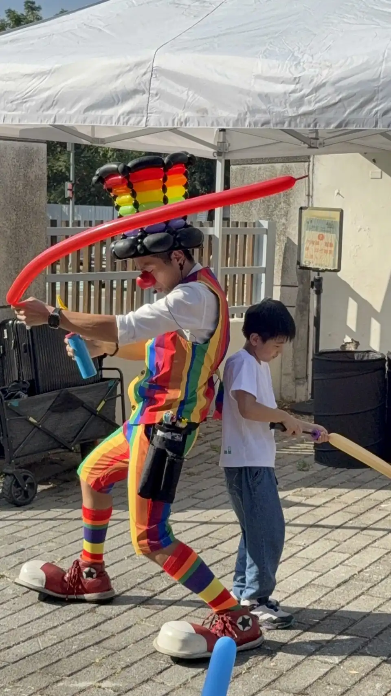
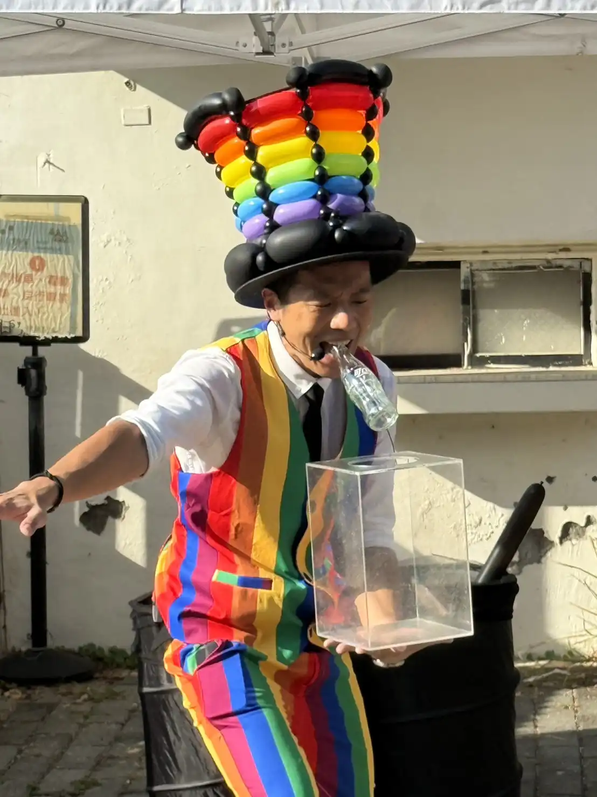
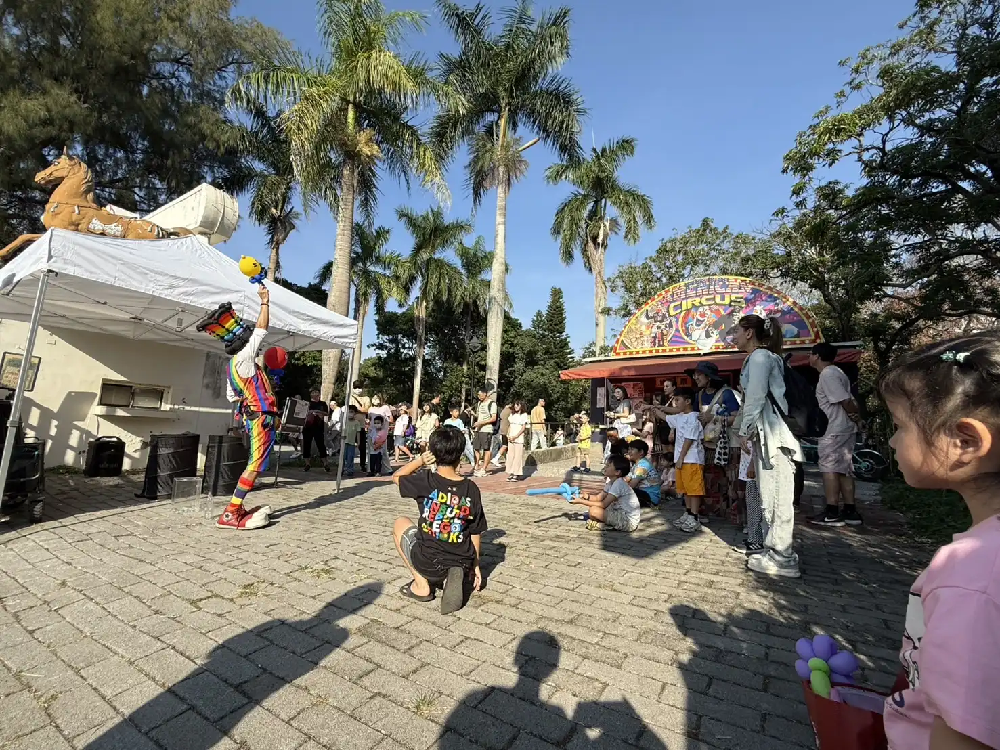

台中后里馬場｜2025 樂器節 × 氣球魔術表演 × 爆笑互動秀
街頭氣球魔術 × 爆破可樂瓶 × 彩虹系搞笑造型｜后里馬場萬人慶典熱鬧登場！
📍 地點：台中市后里區｜后里馬場
樂器節盛大舉行：氣球魔術點燃台中人情味
為慶祝 2025 台中樂器節 邁入第 20 週年，主辦單位於后里森林公園與后里馬場展開為期兩天的音樂慶典。 除千人匯演、音樂市集外，現場特別安排精彩的街頭藝人表演。氣球大叔 Sony 一登場便以高度幽默與視覺張力吸引眾多家庭圍觀，成為展演區最具人氣的焦點。

震撼橋段：氣壓爆破可樂瓶 × 舞台級互動秀
本場演出以鮮豔的 彩虹服裝 與標誌性氣球高帽亮相。Sony 不僅帶來魔術，更祭出招牌的「口吹氣壓炸破可樂瓶」特技，高張力的現場表現引發全場驚呼，將活動氣氛推向最高峰。


「戶外大型場域也能玩出頂級的專業感與舞台感，這就是氣球大叔 Sony 的魅力！」 — 2025 台中樂器節觀眾回饋
結語：台中大型戶外活動的專業表演首選
無論是在 后里馬場 的廣大空間，還是在百貨商場的中庭，氣球大叔 Sony 都能根據地型與人潮靈活調整表演內容。 我們擅長將校園慶典、社區晚會與政府大型活動打造成最有記憶點的亮點。如果您正在規劃台中、桃園、新竹地區的表演，Sony 是您最值得信賴的合作夥伴。
🔥 更多台中在地與大型慶典精彩案例：
- 👉 台中指標活動：IKEA 台中 11 週年慶｜親子氣球互動魔術秀紀錄
- 👉 官方萬人盛會：基隆城市博覽會｜國門廣場萬人魔術氣球秀紀錄
- 👉 畢業感恩季：台中南屯女兒紅謝師宴｜畢業魔術互動秀花絮
- 👉 文化慶典演出：新北三峽藍染節｜舞台氣球魔術互動演出紀錄